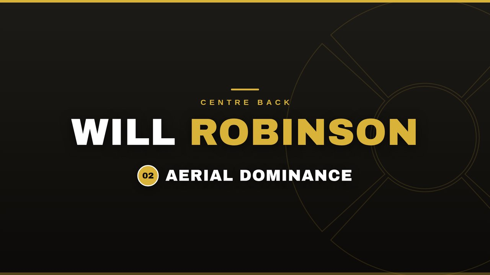
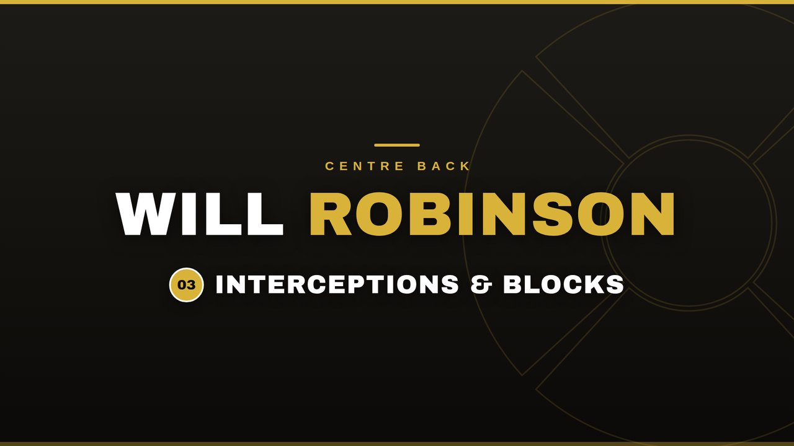
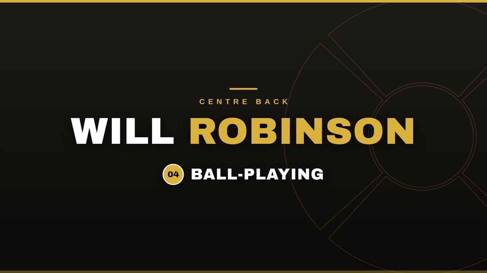

Four traits decide whether a centre-back can play: the duel, the header, the read and the pass. Half the job is stopping attacks; the other half is starting them. Here's each one broken down, each backed by Will's own match footage.
Centre-back is the most unforgiving position on the pitch. A midfielder loses the ball and someone covers. A striker misses and gets another chance a minute later. A centre-back makes one mistake and it's a goal. So the position gets judged on a short list of things done reliably, under pressure, every week: defend the duel, dominate the air, read danger before it becomes danger, and use the ball well enough that the team isn't playing 10 v 11 in possession.
And the job has doubled in size. Build-up now starts with the back line, so centre-backs see more of the ball than almost anyone on the pitch — no position's on-ball involvement has grown faster over the last decade. The modern centre-back defends his box and starts the attacks, in the same ninety minutes. Teams that don't have one play slower, flatter and easier to press.
This page breaks Will's game down against those four standards. Each section explains what the trait actually involves, then shows match footage from his senior appearances and U21 football at Marske United to back it up.
Isolated against a runner, there's nowhere to hide. The good ones don't dive in — they show the attacker where to go, stay on their feet, match the first burst, and pick the moment the touch gets heavy. Recovery pace covers the rest. This is the trait scouts test first, because when it fails, everything behind it fails with it.
Side-on, showing the attacker away from goal, never square.
Buying time for recovery runners beats a 50/50 lunge.
Timing the tackle when the touch is loose — win it, keep it.
Every level of the game up to the top runs on aerial duels: long balls, second balls, corners at both ends. A centre-back who wins his headers kills the opposition's easiest route forward and becomes a threat from set pieces at the other end. It's attack of the ball, timing of the jump, and the appetite to go and win it again thirty seconds later.

2:09Dealing with crosses and direct balls, first contact every time.
Not just heading it away — heading it to a teammate.
Attacking corners and free kicks at the other end.
The best defending never looks dramatic. It's the pass cut out before the striker turns, the covering step that closes the channel, the body on the line when the shot finally comes. Interceptions and blocks are what game-reading looks like on film: proof a defender sees the picture a second earlier than the player he's marking.

3:21Stepping in front to intercept the pass into feet.
Sweeping behind the line and across the channels.
Last-line commitment — body in the way of the shot.
The modern game asks centre-backs to start attacks, not just stop them — and they get the ball enough to prove it, with as many touches in a possession side as any midfielder. That means taking the ball under pressure, playing through the press, and picking the forward pass when it's on rather than the safe sideways ball every time. A defender who can't use it puts a ceiling on the whole team's build-up.

4:53Receiving under pressure without panicking it long.
The pass between the lines that takes out the first press.
The switch or the diagonal when the picture opens up.